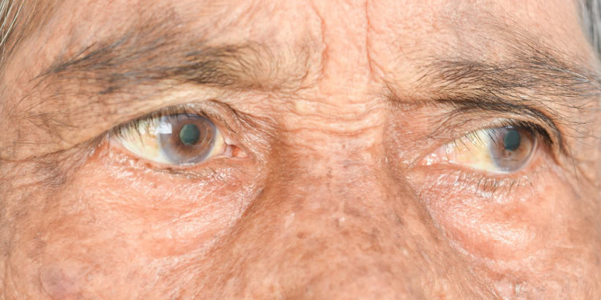
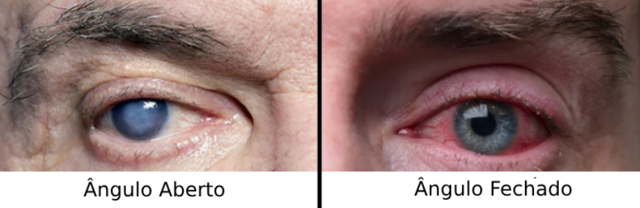
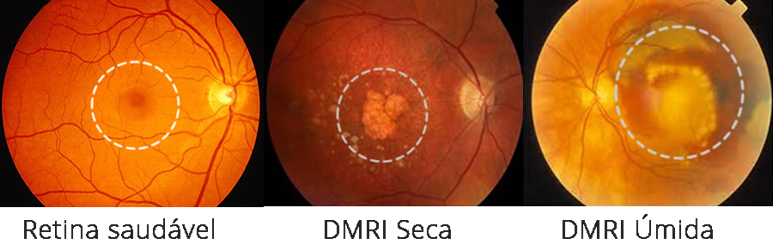
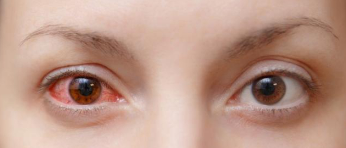
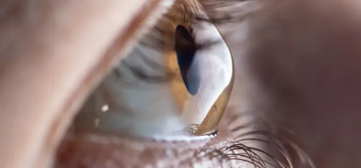

Principais doenças oculares
A visão é um dos sentidos mais importantes para a qualidade de vida, e diversas doenças oculares podem levar à perda parcial ou total da capacidade de enxergar. Muitas dessas condições são silenciosas em seus estágios iniciais, tornando essencial o diagnóstico precoce por meio de exames oftalmológicos regulares.
Neste artigo, exploraremos as principais doenças oculares que causam perda de visão, detalhando suas causas, sintomas, métodos de diagnóstico e opções de tratamento.
1. Catarata
A catarata é uma condição bastante comum, especialmente em pessoas com mais idade. Ela se desenvolve de forma lenta e afeta o cristalino, a lente natural dos olhos, tornando a visão progressivamente embaçada, como se fosse uma névoa constante. Embora seja uma das principais causas de cegueira no mundo, é também uma das mais tratáveis, principalmente quando diagnosticada a tempo.
Causa: Opacificação do cristalino (envelhecimento, diabetes, trauma).
Sintomas: Visão embaçada, cores desbotadas, dificuldade à noite.
Tratamento: Cirurgia (troca por lente intraocular).
2. Glaucoma
O glaucoma é uma doença que evolui de maneira quase imperceptível. Ele afeta o nervo óptico e, quando não controlado, pode comprometer de forma irreversível o campo visual. É uma das condições mais preocupantes em oftalmologia, justamente por sua natureza discreta e progressiva.
Causa: Pressão intraocular alta danifica nervo óptico.
Sintomas: Perda de visão periférica (silencioso), dor (casos agudos).
Tratamento: Colírios, laser ou cirurgia.
3. DMRI (Degeneração Macular)
A DMRI é uma condição que atinge a região central da retina, chamada mácula, responsável pela visão de detalhes. Com o passar do tempo, essa área pode perder eficiência, tornando atividades simples do dia a dia, como ler ou reconhecer rostos, cada vez mais difíceis. É uma das principais causas de perda visual em pessoas com mais de 60 anos.
Causa: Degeneração da mácula (idade, genética).
Sintomas: Visão central distorcida, mancha escura.
Tratamento: Injeções anti-VEGF (úmida), suplementos (seca).
4. Descolamento de Retina

O descolamento da retina é uma emergência oftalmológica. Ele acontece quando essa fina camada sensível à luz se desprende da parte de trás do olho, interrompendo seu funcionamento adequado. Apesar de não ser muito comum, quando ocorre exige atenção imediata para preservar a visão.
Causa: Retina se deprendendo (trauma, miopia alta).
Sintomas: Moscas volantes, flashes, sombra na visão.
Tratamento: Emergência cirúrgica.
5. Retinopatia Diabética

Essa doença está diretamente ligada ao diabetes e aos efeitos que ele causa nos vasos sanguíneos da retina. Com o tempo, o excesso de glicose pode comprometer a circulação ocular, impactando a visão. É uma das complicações mais sérias do diabetes e uma das principais causas de cegueira em adultos.
Causa: Diabetes danifica vasos da retina.
Sintomas: Visão turva, manchas, cegueira súbita.
Tratamento: Controle glicêmico, laser, cirurgia.
6. Retinite Pigmentosa

Trata-se de uma condição hereditária que afeta lentamente as células da retina, especialmente aquelas responsáveis pela visão noturna e periférica. Muitas vezes diagnosticada na juventude, a retinite pigmentosa pode levar à perda gradual da capacidade visual, exigindo acompanhamento constante.
Causa: Doença genética degenerativa.
Sintomas: Cegueira noturna, visão em túnel.
Tratamento: Sem cura, apenas suporte.
7. Neurite Óptica

A neurite óptica é uma inflamação que atinge o nervo óptico, estrutura fundamental na transmissão das imagens ao cérebro. Essa condição pode causar alterações visuais temporárias ou permanentes e, em alguns casos, está associada a doenças neurológicas mais amplas.
Causa: Inflamação do nervo óptico (esclerose múltipla).
Sintomas: Dor ao mover os olhos, perda súbita de visão.
Tratamento: Corticoides.
8. Uveíte
Inflamatória por natureza, a uveíte pode afetar diferentes partes internas do olho, como a íris, o corpo ciliar e a coroide. Suas causas são variadas — podem ser infecciosas, autoimunes ou até desconhecidas — e os efeitos sobre a visão podem ser bastante intensos se não tratados adequadamente.
Causa: Inflamação intraocular (infecções, autoimune).
Sintomas: Vermelhidão, dor, fotofobia.
Tratamento: Anti-inflamatórios.
9. Oclusão Vascular da Retina

Assim como os derrames que ocorrem no cérebro, a oclusão vascular da retina envolve o bloqueio de vasos sanguíneos, comprometendo o suprimento de oxigênio e nutrientes. Pode surgir de forma súbita e afetar severamente a capacidade de enxergar, exigindo diagnóstico e manejo rápidos.
Tipos: Artéria (cegueira súbita) ou veia (sangramento).
Causa: Pressão arterial elevada, diabetes, aterosclerose (acúmulo de placas de gordura, cálcio e outras substâncias nas paredes das artérias), entre outras.
Sintomas: Alguns dos sintomas comuns podem incluir visão embaçada ou diminuída, perda de visão periférica, manchas escuras na visão, e, em casos mais graves, perda súbita da visão.
Tratamento: Cirurgia, utilização de laser em áreas específicas da retina ou medicamentos anti-inflamatórios ou antiangiogênicos (medicamentos que bloqueiam o crescimento de novos vasos sanguíneos anormais) diretamente no olho.
10. Ceratocone
O ceratocone é uma condição que altera o formato da córnea, deixando-a mais fina e pontiaguda, como um cone. Essa deformação modifica a forma como a luz entra no olho, distorcendo a visão. Costuma aparecer ainda na juventude e pode evoluir ao longo dos anos, influenciando diretamente a qualidade visual.
Causa: Córnea deformada (genética, atrito).
Sintomas: Visão distorcida, astigmatismo grave.
Tratamento: Lentes rígidas, crosslinking (procedimento que fortalece a córnea, tornando-a mais resistente e evitando a sua deformação e a progressão do ceratocone), transplante.
Prevenção: